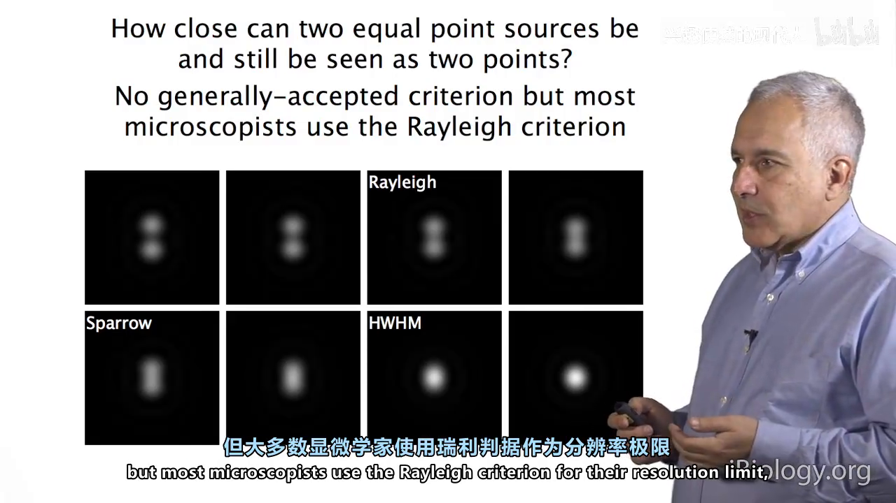
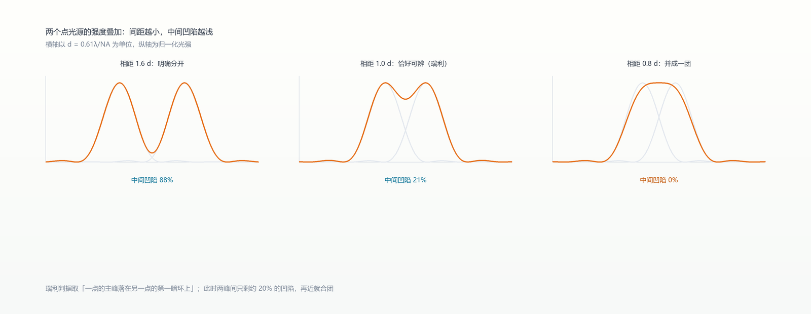
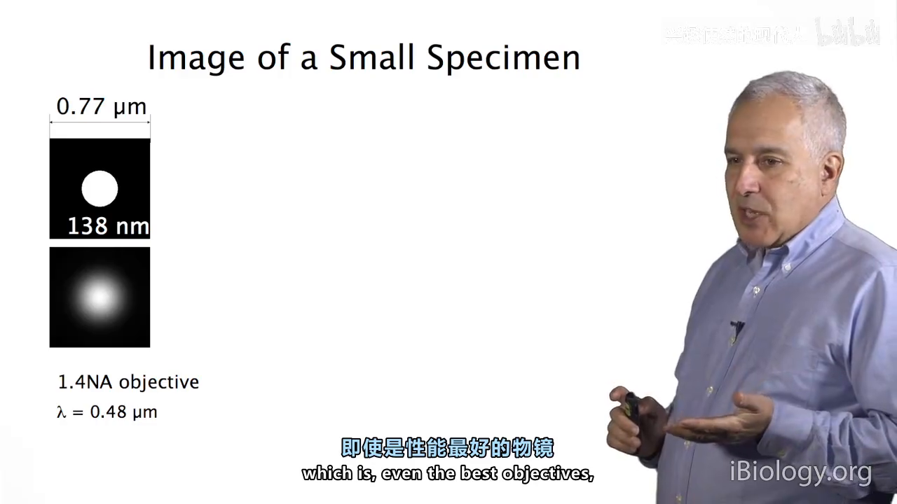
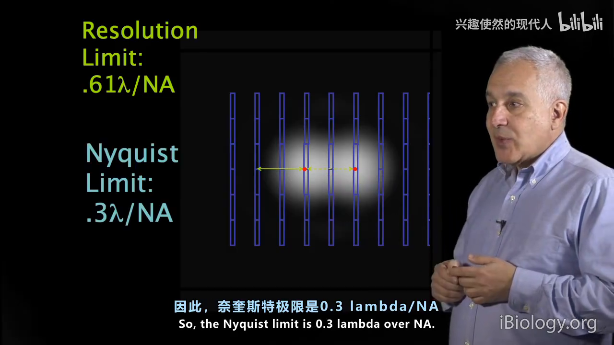
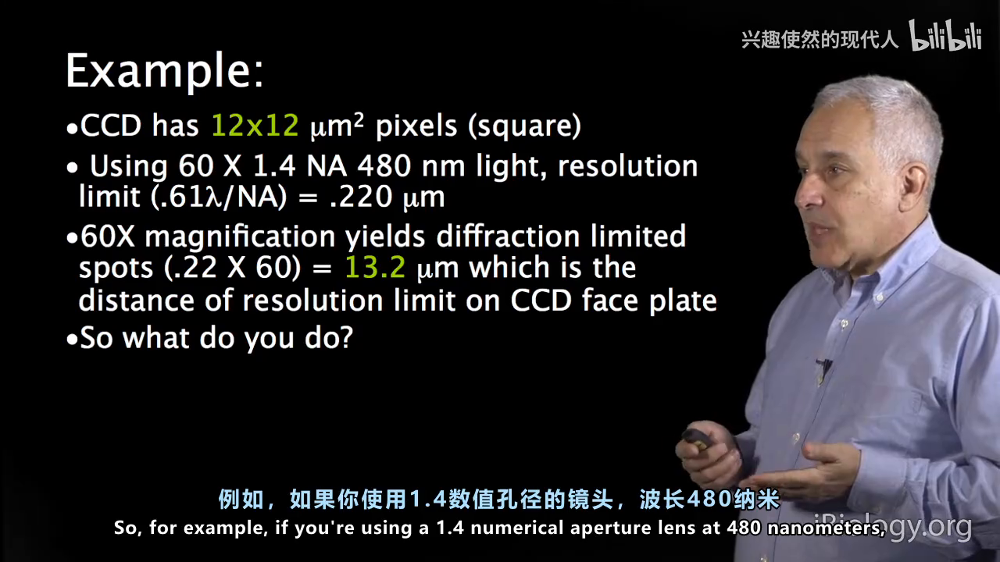

05 分辨率与采样：一条公式，两个陷阱
一句话：分辨率 d = 0.61λ/NA，是光学定死的；但"相机采得够不够"是另一回事——采不够会出现假的纹理（混叠），比模糊更危险。
5.1 瑞利判据：能分开的极限
瑞利判据：一个点的主峰正好落在另一个点的第一暗环上，此时两点"勉强算分开"。
d = 0.61 λ / NA
注意这时两峰之间的强度凹陷只有约 6%——已经是硬撑了。


轴向同理：
d_z = 2nλ / NA²，凹陷约 21.9%
5.2 三个推论
- NA 在分母：NA 翻倍，分辨率翻倍。
- 波长越短越好：蓝/UV 比红光细，但光毒和穿透变差。
- 提高 n（水/甘油/油）等效于提高 NA。
5.3 小于 d 的东西不会变小，只会变暗
这是最反直觉的一条。讲者拍了一组 138、114、90、66、42、18 nm 的荧光微球：图像尺寸几乎一样，只有亮度在降。
所以"我图里这个点只有 50 nm"——从尺寸上根本推不出来。

5.4 奈奎斯特：一个可分辨单元至少 2 个像素
像素在样品面的尺寸 ≤ 0.3λ/NA，工程上取 2–3 像素/分辨单元。
算一遍就懂：
- 6.5 µm 像素 + 100× 物镜 → 65 nm/像素；
- NA 1.4、480 nm 的分辨率约 229 nm → 需要 ≈110 nm/像素；
- 65 nm 属于过采样（不坏，只是浪费视场）；
- 60× + 12 µm 像素 → 200 nm/像素 → 欠采样。

5.5 欠采样的真面目：混叠
欠采样不是"模糊"，而是混叠（aliasing）：细条纹被采成假的棋盘纹、斜纹。讲者用一张斑马图演示——随着采样率提高，假的"棋盘格"才一层层消失。
在科研图像里这最危险：你会以为那个周期性结构是真的。

记住：换 100× 主要改善的是采样，不是分辨率（分辨率由 NA 和 λ 决定）。
本章自测
- NA 1.3、λ 550 nm，横向分辨率是多少？想要 2 像素/单元，像素应多大？
- 为什么"图像看起来更大了"不代表"信息更多了"？
- 一张图里出现规则的棋盘状纹理，可能是光学问题还是采样问题？怎么验证？
回看：P10（20:47）。